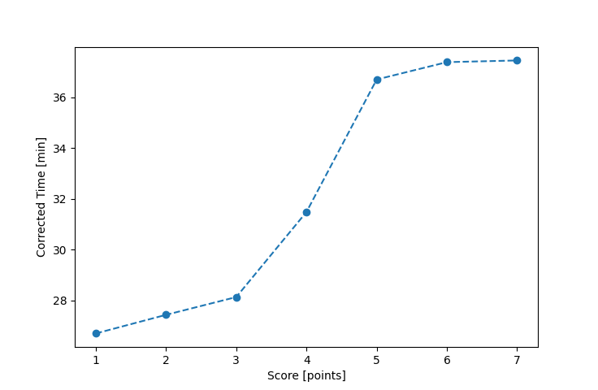

| Wind: | 2-3 (BFT) |
|---|---|
| RC: | Nick_H, Ian_O |
| Date: | September 14, 2025 |
| Notes: | M3 |
| Rank / Score | Name | Boat | Input Time [mm:ss] | Input Offset [mm:ss] | Race Time [mm:ss] | Race Time [s] | Handicap | Corrected Time [s] | Corrected Time [mm:ss] |
|---|---|---|---|---|---|---|---|---|---|
| 1.0 | Rod_H | LASEM | 31:59 | 06:00 | 25:59 | 1559 | 0.97300 | 1602 | 26:42 |
| 2.0 | Matt_L | F5 | 32:30 | 06:00 | 26:30 | 1590 | 0.96600 | 1646 | 27:26 |
| 3.0 | Bill_P | SF | 34:15 | 06:00 | 28:15 | 1695 | 1.00400 | 1688 | 28:08 |
| 4.0 | Ryan_C | SF | 37:37 | 06:00 | 31:37 | 1897 | 1.00400 | 1889 | 31:29 |
| 5.0 | Heather_B | SF | 42:51 | 06:00 | 36:51 | 2211 | 1.00400 | 2202 | 36:42 |
| 6.0 | Jim_M | SF | 43:32 | 06:00 | 37:32 | 2252 | 1.00400 | 2243 | 37:23 |
| 7.0 | Larry_G | SF | 43:36 | 06:00 | 37:36 | 2256 | 1.00400 | 2247 | 37:27 |
| 8.0 | Jay_E | SF | FIP_8 | -- | -- | -- | -- | -- | FIP_8 |
| 9.0 | Elliott_F | SF | FIP_9 | -- | -- | -- | -- | -- | FIP_9 |
| 10.0 | Adam_E | SF | FIP_10 | -- | -- | -- | -- | -- | FIP_10 |

Application Notes:
All race results are unofficial. Official results placements are determined by club officers at the end of seach series.
View source code at https://github.com/imorourke/jcss